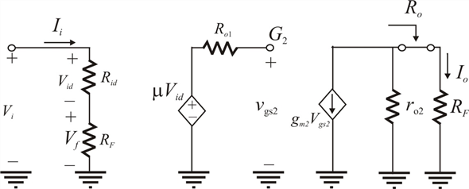

Define the feedback factor,  .
.
The closed loop gain  is,
is,
At  , closed loop gain
, closed loop gain  becomes:
becomes:
Thus, approximate expression for closed-loop trans-conductance  is .
is .
(a)
Refer to the circuit diagram of trans-conductance amplifier in figure P10.47 in the textbook.
Draw the equivalent circuit for the figure.

Figure 1
Define the feedback factor, .
The closed loop gain is,
At , closed loop gain becomes:
Thus, approximate expression for closed-loop trans-conductance is .
The desired loop gain is,
.
Rewrite the equation.
Feedback resistor,  is
is  .
.
Therefore to get the desired  should be
should be  .
.
(b)
Apply voltage division rule to find voltage.
The gate to source voltage  is,
is,
Apply current division rule to find the output current.
Substitute for.
Substitute for .

Usually  resulting in the approximate expression for
resulting in the approximate expression for  is .
is .
Recall the expression for open loop gain.
Substitute corresponding values.
 Thus, open loop gain of the trans-conductance amplifier
Thus, open loop gain of the trans-conductance amplifier  is .
is .
Multiply  and
and  terms.
terms.
Find the expression for feedback amount.
Substitute corresponding values.
Thus, feedback amount of the trans-conductance amplifier  is .
is .
(d)
The closed loop gain  is,
is,
Hence, the closed loop gain  is same as the earlier result
is same as the earlier result
(e)
From the circuit, the output resistance is,
Note that the series connection at the output raises the output resistance. Thus, output resistance is,
Substitute  for
for  and for
and for in the equation.
in the equation.
Thus, output resistance of the amplifier  is
is
Recall the expression for output resistance of the amplifier.

Substitute for  and
and  for
for  in the equation.
in the equation.
Thus, output resistance of the amplifier  is .
is .